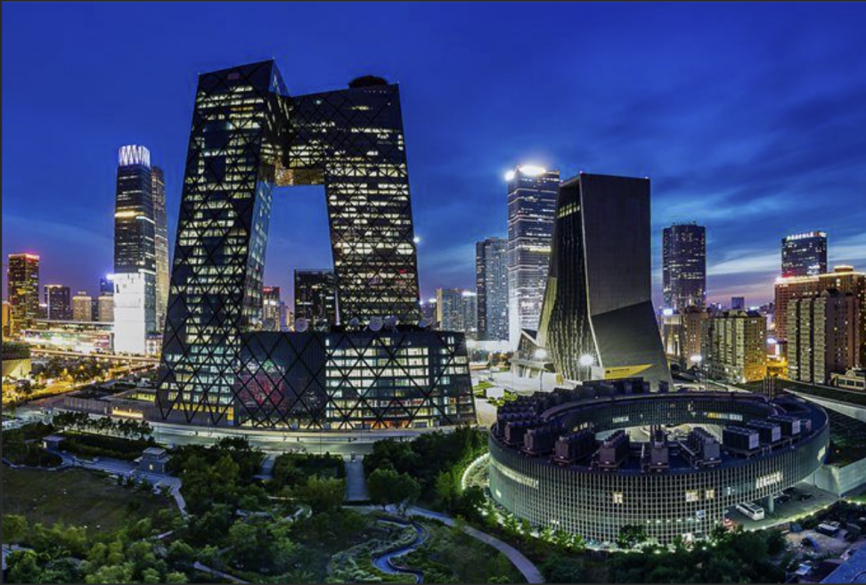

-
上海
古代文明与现代文明在这里交相辉映，碰撞出全新的火花。
-
 北京
北京拥有三千多年的悠久历史，是六朝古都，深厚的历史底蕴孕育出丰富的旅游资源。
-
广州
从公元三世纪起成为海上丝绸之路的主港，唐宋时成为中国第一大港，是世界著名的东方港市，明清时是中国唯一的对外贸易大港，也是世界唯一两千多年长盛不衰的大港。
-
武汉
武汉是国家历史文化名城，楚文化的重要发祥地，境内盘龙城遗址有3500年历史。
-
伦敦
伦敦，是大不列颠及北爱尔兰联合王国首都，世界金融中心，伦敦占全球外汇交易额的比重超过40%，与纽约和香港并称为“纽伦港”。
-
纽约
纽约市，位于美国纽约州东南部大西洋沿岸，是美国第一大城市及第一大港口，纽约都市圈为世界上最大的都市圈之一。
-
柏林
位于德国东北部，是德国的首都和最大的城市，也是德国的政治、文化、交通及经济中心。
-
巴黎
巴黎，是法兰西共和国的首都和最大城市，也是法国的政治、经济、文化和商业中心，世界五个国际大都市之一。
美景美食一屏间
文创购买，VR观景，在这里，你可以看到超现代的魔都，可以看到战疫胜利的武汉，还有于时间与空间璀璨的巴黎，四处看看，开启你的旅行吧